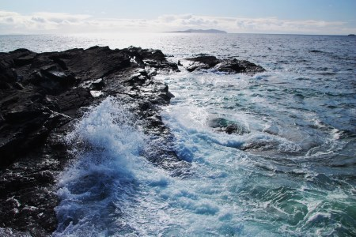

|  | Atlantic OceanThe Ocean separating North and South America from Europe and Africa. The second largest of the worlds oceans, the Atlantic has an area of 31,830,000 sq mi (82,440,000 sq km). With its marginal seas, including the Baltic, North, Black, and Mediterranean to the east, and Baffin Bay, Hudson Bay, the Gulf of St. Lawrence, Gulf of Mexico, and Caribbean Sea to the west, it covers some 41,100,000 sq mi (106,450,000 sq km) Including these latter bodies of water, its average depth is 10,925 ft (3,330 m); its maximum depth is 27,493 feet (8,380 m) in the Puerto Rico Trench. Its most powerful current is the Gulf Stream The principal feature of the bottom bathymetry ( terrain) of the Atlantic Ocean is a submarine mountain range called the Mid-Atlantic Ridge. It extends from Iceland in the north to approximately 58° South latitude, reaching a maximum width of about 1,600 kilometres (1,000 mi). A great rift valley also extends along the ridge over most of its length. The depth of water over the ridge is less than 2,700 m (8,900 ft) in most places, and several mountain peaks rise above the water and form islands. The South Atlantic Ocean has an additional submarine ridge, the Walvis Ridge. The Mid-Atlantic Ridge separates the Atlantic Ocean into two large troughs with depths averaging between 3,700 and 5,500 metres (12,000 and 18,000 ft). Transverse ridges running between the continents and the Mid-Atlantic Ridge divide the ocean floor into numerous basins. Some of the larger basins are the Guiana, North American, Cape Verde, and Canaries basins in the North Atlantic. The largest South Atlantic basins are the Angola, Cape, Argentina, and Brazil basins. The deep ocean floor is thought to be fairly flat, although numerous seamounts and some guyots exist. Several deeps or trenches are also found on the ocean floor. The Puerto Rico Trench, in the North Atlantic, is the deepest. The Laurentian Abyss is found off the eastern coast of Canada. In the South Atlantic, the South Sandwich Trench reaches a depth of 8,428 metres (27,651 ft). A third major trench, the Romanche Trench, is located near the equator and reaches a depth of about 7,454 metres (24,455 ft). The shelves along the margins of the continents constitute about 11% of the bottom topography. Several deep channels cut across the continental rise. |